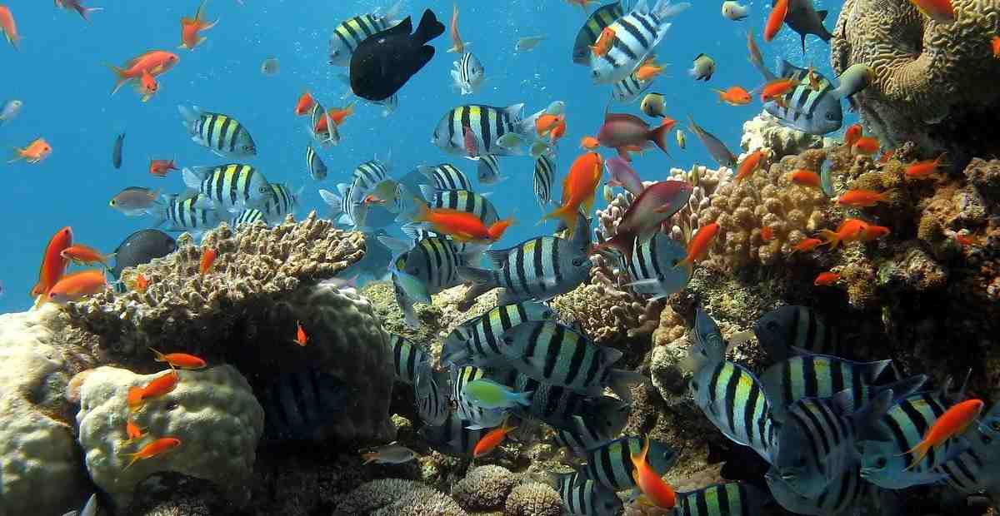
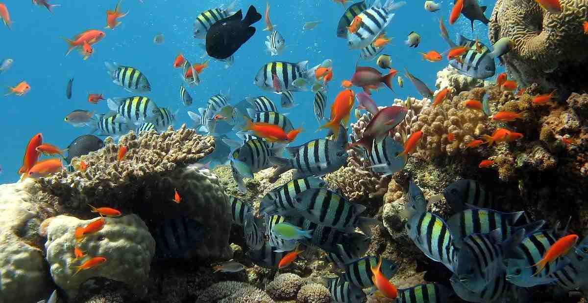

Taman Laut Bunaken merupakan surga bawah laut yang terkenal di Indonesia.
Terletak di dekat Manado, taman laut ini menjadi salah satu destinasi menyelam yang cukup baik karena pemandangan lautnya.
Pengunjung dapat melihat di bawah laut banyaknya terumbu karang yang indah, beragam jenis ikan, dan kehidupan laut lainnya.
Tempat ini cocok untuk para pecinta snorkeling dan diving yang ingin menjelajahi menyelam.